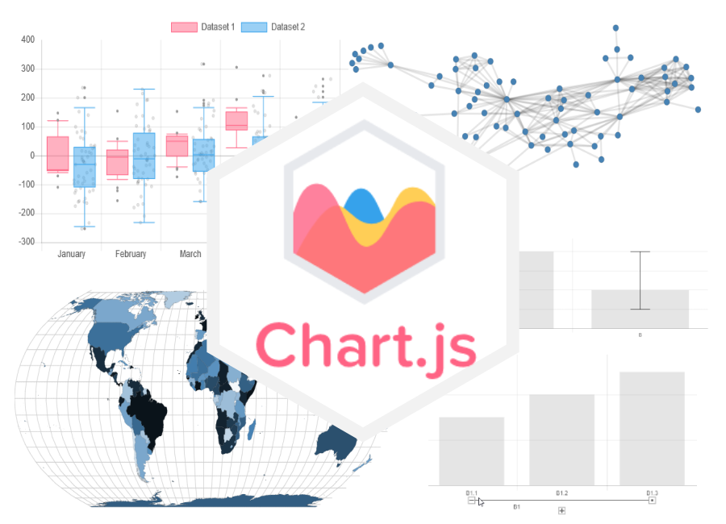

Cos'è Chart.js?
Chart.js è una libreria JavaScript per la creazione di grafici interattivi nel browser.
Nata nel 2013, ottima per la visualizzazione dati sul web perchè semplice da usare, potente e completamente personalizzabile.
Chi conosce matplotlib in Python troverà la stessa logica: si dichiara il tipo di grafico, si passano i dati e si configurano le opzioni. La differenza è che il risultato è interattivo e animato nel browser.

Sito ufficiale : Visita il sito ufficiale di Chart.js
Come funziona?
Chart.js utilizza l'elemento <canvas> di HTML5
per disegnare i grafici. Canvas è una superficie di rendering su
cui JavaScript disegna direttamente forme, linee e testo senza
creare elementi HTML nel DOM.
Questo approccio garantisce prestazioni elevate anche con dataset complessi, fino a 1 milione di punti con il decimation plugin attivo.
Come si include?
Non richiede installazioni complesse. Un singolo script via CDN è sufficiente per avere accesso a tutti gli 8 tipi di grafici:
<script src="https://cdn.jsdelivr.net/npm/chart.js"></script>
new Chart(canvas, {
type: 'bar',
data: { labels: [...], datasets: [...] },
options: { responsive: true }
})Caratteristiche principali
Progetto mantenuto dalla community, contribuzioni aperte a tutti.
Bar, line, pie, doughnut, radar, scatter, bubble e polar area (tutti animati).
I grafici si ridisegnano al resize della finestra mantenendo le proporzioni.
Rendering ad alte prestazioni su tutti i browser moderni.
Novità in Chart.js 4.0
Palette di colori predefinita disponibile come plugin integrato.
La dimensione del bundle può essere ridotta registrando solo i componenti necessari.
Supporto nativo a TypeScript con definizioni di tipo complete e aggiornate.
Storia di Chart.js
Nick Downie pubblica Chart.js su GitHub.
Versione 2.0 con sistema a plugin.
Versione 3.0, riscrittura completa.
Versione 4.0, descritta nel box sopra.
Chart.js in dettaglio
Dalla configurazione avanzata all'integrazione con Vue.js, con esempi di casi d'uso reali e confronto con le alternative. Tutto quello che serve per usare Chart.js in un progetto reale!
Chart.js vs le alternative
Le tre librerie più usate per la visualizzazione dati sul web hanno caratteristiche molto diverse:
| Caratteristica | Chart.js | D3.js | Plotly.js |
|---|---|---|---|
| Curva di apprendimento | Bassa | Alta | Media |
| Rendering | Canvas | SVG | SVG / WebGL |
| Tipi di grafici | 8 predefiniti | Illimitati | 40+ |
| Personalizzazione | Alta | Totale | Alta |
| Peso (minified) | ~60KB | ~90KB | ~3MB |
| Interattività | Integrata | Manuale | Integrata |
| Adatto ai principianti | Si | No | Si |
Integrazione con Vue.js
Chart.js si integra nativamente con Vue.js tramite il lifecycle hook
mounted() e il metodo $nextTick().
Il canvas deve essere presente nel DOM prima di inizializzare il grafico.
createApp({
mounted() {
this.$nextTick(() => {
const ctx = document.getElementById('mioGrafico')
new Chart(ctx, {
type: 'bar',
data: { ... },
options: { responsive: true }
})
})
}
}).mount('#app')
Il metodo $nextTick() garantisce che Vue abbia completato
il rendering del DOM prima di cercare il canvas. Senza di esso,
il grafico non trova l'elemento e non viene creato.
Scale
Gli assi X e Y sono completamente configurabili ( scala lineare, logaritmica, temporale o categorica). Ogni asse supporta titoli, griglie e tick personalizzati.
scales: {
y: {
type: 'logarithmic',
title: {
display: true,
text: 'Valore'
}
}
}Plugin
Il sistema di plugin permette di estendere Chart.js con funzionalità personalizzate quali annotazioni, zoom, etichette dati e molto altro.
plugins: {
legend: {
position: 'bottom'
},
tooltip: {
callbacks: {
label: (ctx) =>
ctx.parsed.y + ' unità'
}
}
}Animazioni
Ogni proprietà di ogni elemento può essere animata individualmente. Le transizioni si attivano al caricamento e all'aggiornamento dei dati.
animation: {
duration: 1000,
easing: 'easeOutQuart',
onComplete: () => {
console.log('Fatto!')
}
}Casi d'uso reali
Visualizzazione di risultati: curve ROC, confusion matrix rappresentate come heatmap, distribuzioni di feature con istogrammi.
KPI in tempo reale, andamento vendite, metriche di performance.
Visualizzazione di vulnerabilità, trend di attacchi nel tempo, distribuzione per severità esattamente come in questa applicazione.
Grafici per paper e tesi, visualizzazione di dataset sperimentali, confronto tra algoritmi con grafici a barre e scatter plot.
Dashboard Vulnerabilità AI
Visualizzazione interattiva delle vulnerabilità OWASP LLM Top 10 2025. I dati sono caricati dal file JSON e sincronizzati con le operazioni CRUD tramite localStorage.
Severità
Distribuzione per livello di severità.
Categorie
Distribuzione per tipo di attacco.
Trend temporale
Vulnerabilità scoperte per anno.
Tutte le vulnerabilità
| Codice OWASP | Nome | Categoria | Severità | Anno |
|---|---|---|---|---|
| {{ v.codice_owasp }} | {{ v.nome }} | {{ v.categoria }} | {{ v.severita }} | {{ v.anno_scoperta }} |
Gestione Vulnerabilità
Aggiungi, modifica o elimina le vulnerabilità del registro. I dati vengono salvati automaticamente nel browser tramite localStorage.
{{ formModifica ? 'Modifica vulnerabilità' : 'Nuova vulnerabilità' }}
Registro vulnerabilità {{ vulnerabilita.length }}
| Codice | Nome | Severità | Anno | Azioni |
|---|---|---|---|---|
| {{ v.codice_owasp }} | {{ v.nome }} | {{ v.severita }} | {{ v.anno_scoperta }} |
|